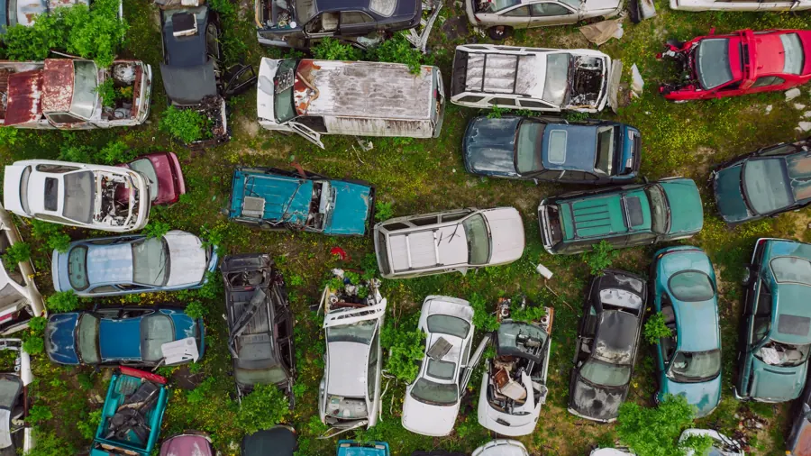
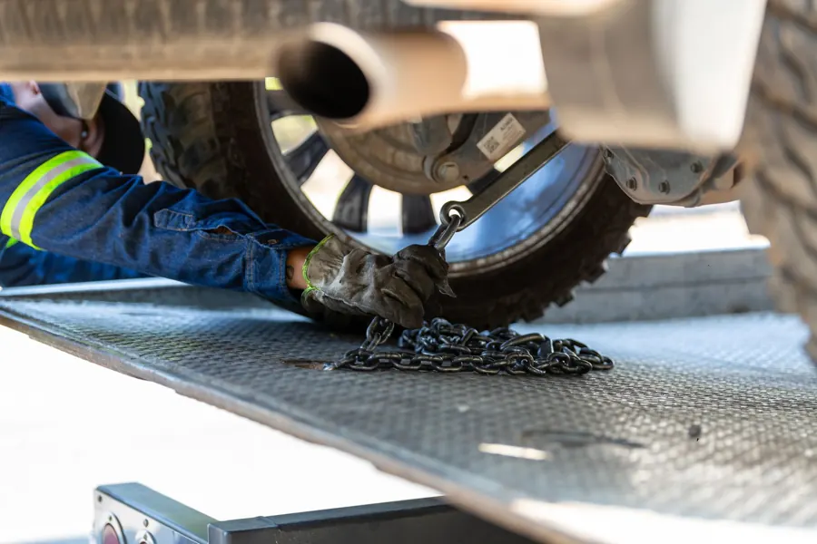
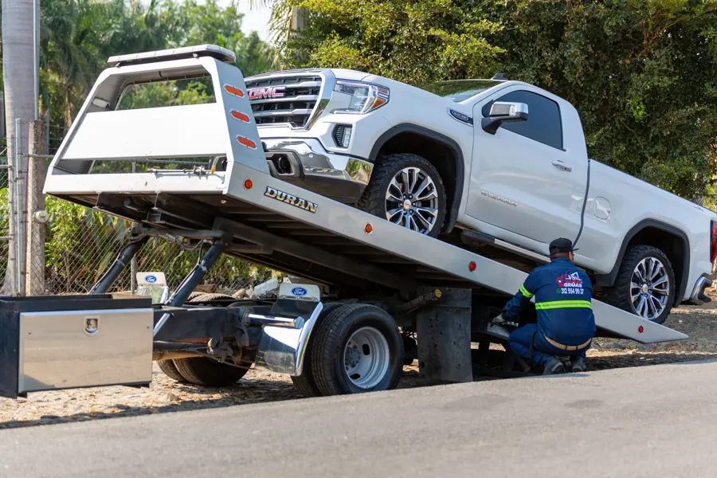
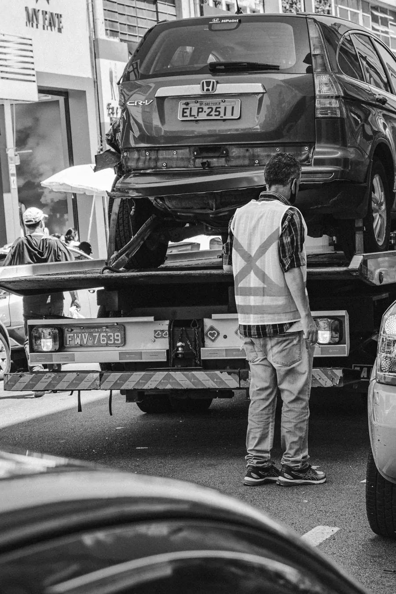
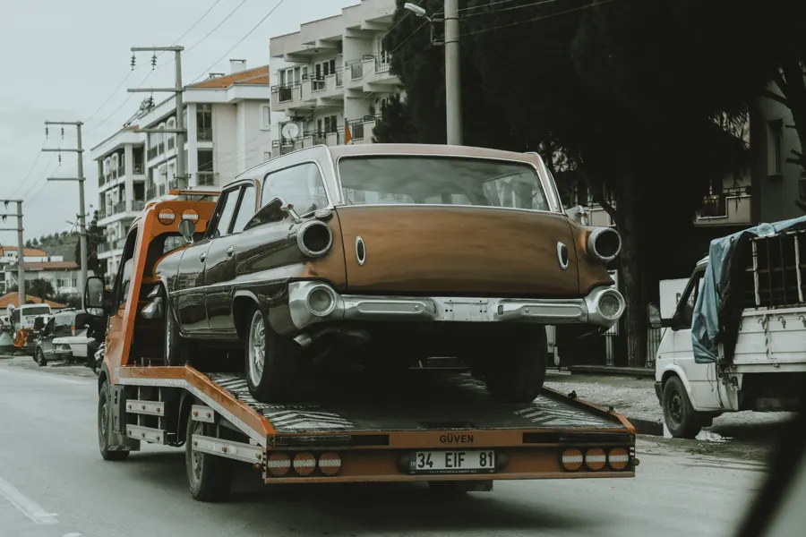
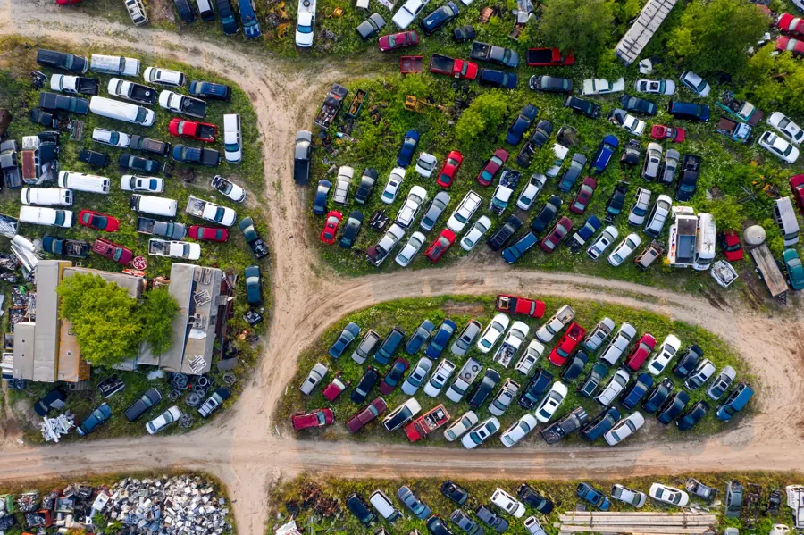
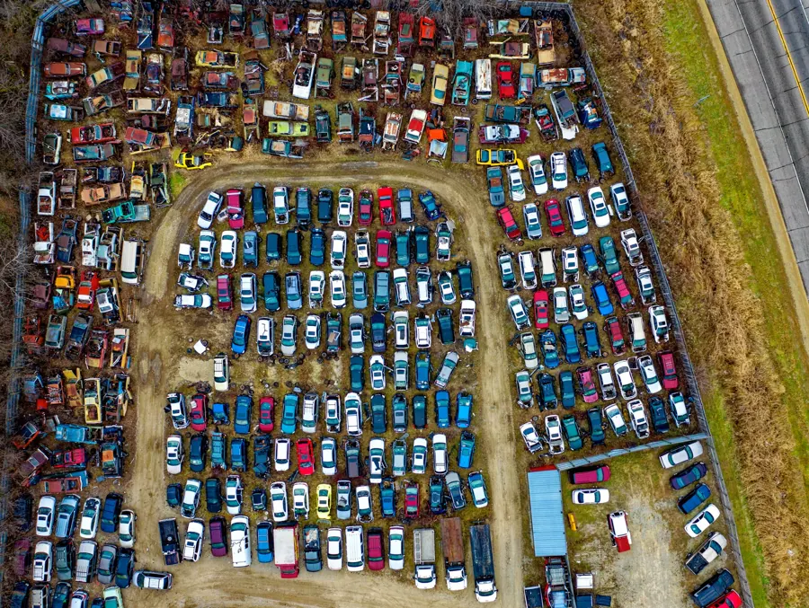

Épaviste 24h/24 · Essonne (91)
Enlèvementd’épave gratuità Ris-Orangis
Voiture hors d’usage, accidentée ou immobilisée : on l’enlève gratuitement et on la remet à notre partenaire, centre VHU agréé, qui établit le certificat de destruction. Une panne ? Même numéro, 24h/24 : 06 07 94 57 98.
- Épave enlevée gratuitement
- Centre VHU agréé partenaire
- Certificat de destruction
- Dépannage 24h/24
Épaviste à Ris-Orangis
Votre épave part
gratuitement.
Véhicule complet avec ses papiers : on l’enlève sans frais et on le remet à notre centre VHU agréé partenaire (PR 9100012D), qui établit le certificat de destruction.
Filière agréée
Votre épave, traitée dans les règles.
La loi impose de confier un véhicule hors d’usage à un centre VHU agréé. Grizzly Dépannage l’enlève chez vous et le remet à son partenaire agréé : vous n’avez rien d’autre à gérer.
En partenariat avec le
Centre VHU agrééPR 9100012DVotre véhicule part chez notre partenaire, centre de traitement des véhicules hors d’usage agréé par la préfecture.
 Filière réglementée par l’État
Filière réglementée par l’ÉtatDépollution, recyclage des matériaux et traçabilité, selon les règles du Ministère de la Transition écologique.
Établi par le centre agréé et enregistré au système d’immatriculation. Il vous libère du véhicule et de son assurance.
Enlèvement gratuit d’un véhicule complet avec ses papiers, sans frais de déplacement.
En panne ?
Trois étapes,
pas de surprise.
- 1
Vous appelez
Au 06 07 94 57 98. Donnez l’adresse, le véhicule et ce qui se passe.
- 2
Prix et heure d’arrivée
On vous annonce le tarif et l’heure d’arrivée avant de partir. Vous décidez.
- 3
On s’occupe du véhicule
Dépannage sur place quand c’est possible, sinon remorquage vers le garage ou l’adresse de votre choix.
Nos services
Six métiers, un seul numéro.
De l’épave qui encombre votre cour à la batterie à plat, Grizzly Dépannage gère toute la chaîne avec son propre camion plateau.

Enlèvement d’épave
Enlèvement gratuit de votre véhicule hors d’usage, remis à notre centre VHU agréé partenaire pour destruction.

Dépannage automobile
Batterie à plat, crevaison, panne sèche, clés enfermées : on vous remet en route sur place quand c’est possible.

Remorquage
Voiture accidentée ou non roulante chargée sur plateau et déposée au garage, chez vous ou en concession.

Assistance routière
Panne ou accident sur la route, en zone commerciale ou en parking : mise en sécurité, dépannage ou remorquage.

Transport de véhicule
Véhicule sans plaque, sans contrôle technique ou non roulant, transporté d’une adresse à l’autre.

Sortie de fourrière
Récupération en fourrière d’un véhicule qui ne peut pas repartir par la route, livré chez vous ou au garage.
Pourquoi Grizzly
Un dépanneur local,
joignable pour de vrai.
- Vous parlez au dépanneurAu bout du fil, celui qui se déplace. Pas de plateforme, pas d’intermédiaire.
- Prix annoncé avant le départLe montant est donné au téléphone. Pas de supplément découvert au moment de payer.
- Camion plateauVotre véhicule voyage entièrement chargé sur le plateau, sans traîner au sol.
- Facture détailléeUn document clair à transmettre à votre assurance ou à votre garage.
Galerie
Le métier en images.

Zone d’intervention
Ris-Orangis et 25 km autour.
Touchez un point de la carte pour voir sa distance depuis notre base. Votre commune n’apparaît pas ? Appelez, on vous dit tout de suite si on peut venir.
Moins de 5 km
5 à 10 km
- Bondoufle
- Savigny-sur-Orge
- Vigneux-sur-Seine
- Étiolles
- Lisses
- Athis-Mons
- Saint-Germain-lès-Corbeil
- Montgeron
- Corbeil-Essonnes
- Sainte-Geneviève-des-Bois
- Tigery
- Saint-Pierre-du-Perray
- Villabé
- Saint-Michel-sur-Orge
- Brunoy
- Villeneuve-Saint-Georges
- Yerres
- Brétigny-sur-Orge
- Longjumeau
- Mennecy
10 à 15 km
- Orly
- Lieusaint
- Combs-la-Ville
- Le Coudray-Montceaux
- Massy
- Arpajon
- Savigny-le-Temple
15 à 25 km
- Melun
Questions fréquentes
Ce qu’on nous demande au téléphone.
Une autre question ? Appelez le 06 07 94 57 98.
L’enlèvement d’épave est-il gratuit ?
Oui, pour un véhicule complet, accessible au camion et accompagné de ses papiers. Le véhicule part chez notre partenaire, centre VHU agréé PR 9100012D, qui établit le certificat de destruction.
Votre centre VHU est-il agréé ?
Oui. Grizzly Dépannage enlève et transporte le véhicule, puis le remet à son partenaire, centre VHU agréé par la préfecture sous le numéro PR 9100012D. Le centre dépollue, recycle et délivre le certificat de destruction.
Combien coûte un dépannage ou un remorquage ?
Le prix dépend de la distance, de l’heure et de la situation. Grizzly Dépannage vous annonce le tarif au téléphone avant que la dépanneuse ne parte. Vous décidez ensuite, sans engagement.
Intervenez-vous la nuit, le week-end et les jours fériés ?
Oui. Le téléphone répond 24h/24 et 7j/7, jours fériés compris, et la dépanneuse part à toute heure.
Dans quelles villes intervenez-vous ?
À Ris-Orangis et dans un rayon de 25 km : Évry-Courcouronnes, Grigny, Viry-Châtillon, Juvisy-sur-Orge, Draveil, Corbeil-Essonnes, Savigny-sur-Orge, Athis-Mons, Sainte-Geneviève-des-Bois, Brétigny-sur-Orge, Montgeron, Mennecy et les communes voisines.
Intervenez-vous sur l’autoroute A6 ?
Non. Sur autoroute, seul le dépanneur agréé du secteur peut intervenir : appelez depuis une borne orange ou le 112. Une fois le véhicule sorti de l’autoroute, on le transporte jusqu’à votre garage.
Mon assurance peut-elle prendre en charge le dépannage ?
Souvent, oui. Si votre contrat inclut une assistance, appelez-la d’abord car certains contrats imposent leur dépanneur. Sinon, on vous remet une facture détaillée à transmettre à votre assureur.
Contact
Urgent ?
Le téléphone d’abord.
Urgence 24h/24 · 7j/7
06 07 94 57 98Le dépanneur vous répond et vous annonce le prix avant de partir.
Appeler maintenant